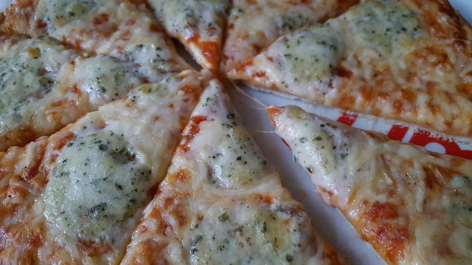

Quattro Formaggi Pizza
Home

Photo by www.snack-nieuws.nl, under CC BY-SA
Description
Mozzarella, fontina, gorgonzola, and parmesan, all on one pizza. What's not to love!
Ingredients:
- Pizza dough or base, use whichever you prefer
- Can of whole, peeled, San Marzano tomatoes
- Italian fontina
- Fresh mozzarella
- Italian gorgonzola dolce
- Parmigiano reggiano
- Good quality olive oil
Steps:
- Preheat a baking stone at max temperature for at least 45 minutes in your oven.
(If you use a baking tray, do not preheat for this long.)
- Crush the tomatoes with your hands, a food processor, or pulse with an immersion blender.
Season to taste with salt.
- Put a ball of dough onto a floured surface and beign to stretch it into a circle.
(Skip steps 2 and 3 if you have a premade base)
- Place the dough over the back of your fists and slowly stretch it
to 30cm in diameter.
- Transfer to a pizza peel or baking tray, dusted with flour. Spread the tomato sauce in a thin layer,
leaving a 3cm gap.
- Sprinkle with fontina first, place torn pieces of mozzarella around the pizza,
dot with pieces of gorgonzola, and finally grate the Parmigiano across the pizza.
Alternatively, try out any combination of cheese you prefer. Shake the pizza to check
it hasn't stuck to the peel, then slide onto the baking stone. (Or place the baking
tray into the oven.)
- Rotate if necessary. Remove when the edges are charred, and the cheese has been melted for
about 5-7 minutes. Drizzle olive oil if desired and serve immediately.